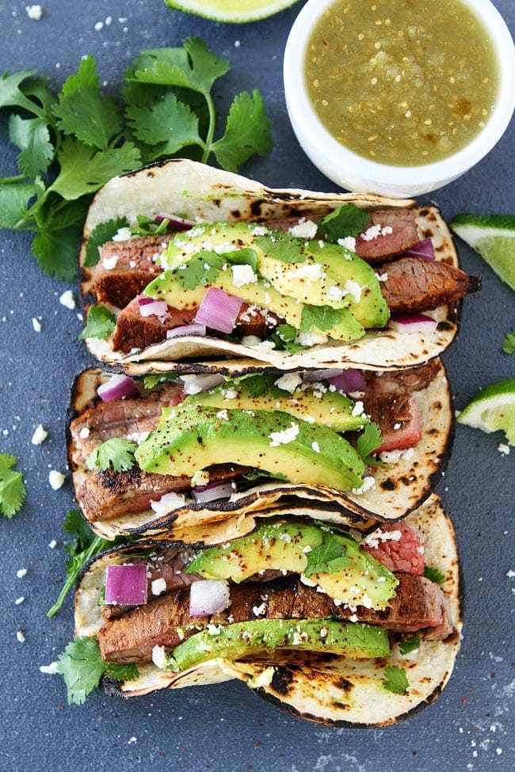

Steak Tacos

Description
Is it Taco Tuesday yet?
Ingredients
- 1kg flank steak
- Juice of 2 large limes
- Zest of 1 large lime
- 2 teaspoons kosher salt
- 1/2 teaspoon black pepper
- 1 teaspoon granulated sugar
- 1/2 teaspoon chili powder
- 1/2 teaspoon cumin
- 1/2 teaspoon paprika
- 1/2 teaspoon garlic powder
- 1/2 teaspoon dried oregano
- 1/8 teaspoon ground cinnamon
- Olive oil for grill
- Corn tortillas
- 1/2 small red onion chopped
- 1 large avocado sliced
- 1/3 cup queso fresco
- Chopped coriander for serving
- Lime wedges for serving
Steps
- Place the flank steak in a 9x13 pan. Pour lime juice over the steak and let marinate for 30 minutes, at room temperature.
- Meanwhile, in a small bowl, combine lime zest, salt, sugar, pepper, chili powder, cumin, paprika, garlic powder, oregano, and cinnamon.
- Rub both sides of the steak with the spice mixture, pressing with your fingers to help the rub adhere to the meat.
- Preheat grill to high heat. Lightly coat a paper towel with oil and, holding it with long tongs, carefully rub the oiled towel over the grill rack. Place steak directly on the grill and cook for 5 minutes on each side. Remove from grill and let the steak rest on a cutting board, covered with foil, for 10 minutes.
- While the steak is resting, warm the corn tortillas on the grill or use a gas flame to char them slightly.
- Cut the steak into strips, against the grain. Place steak strips in the corn tortillas and top with red onion, avocado, cilantro, and queso fresco. Squeeze with lime juice, if desired. Serve warm.